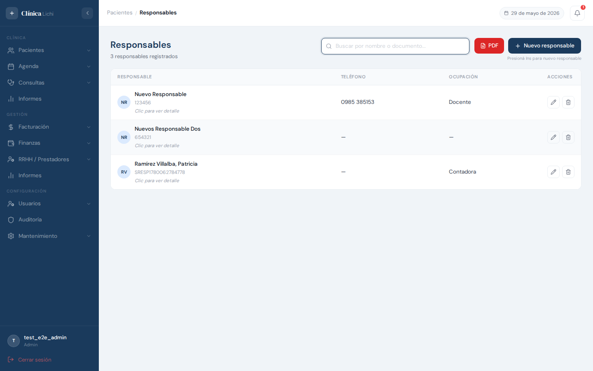
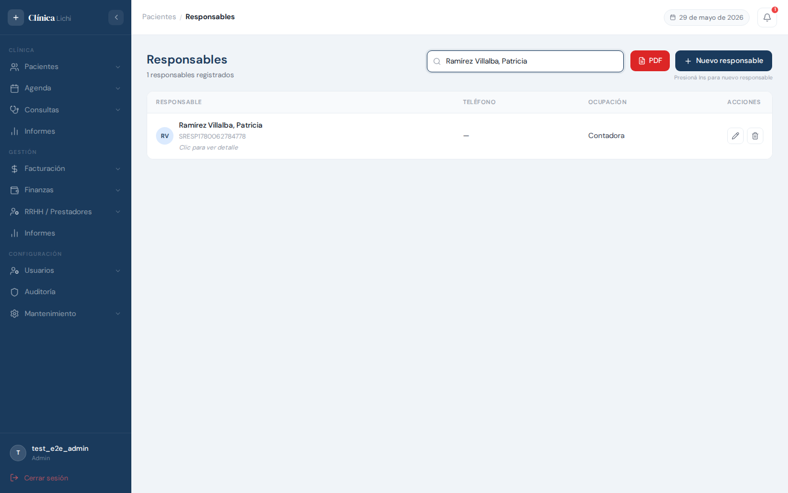
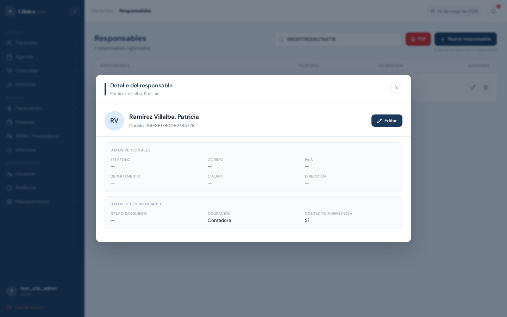
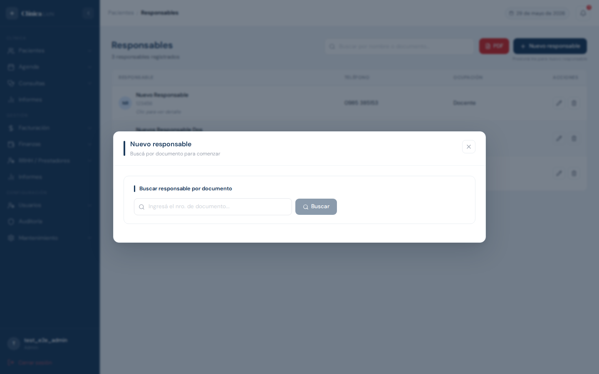
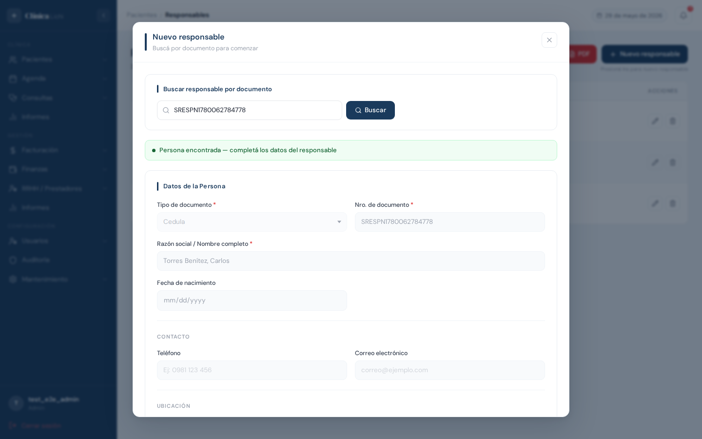
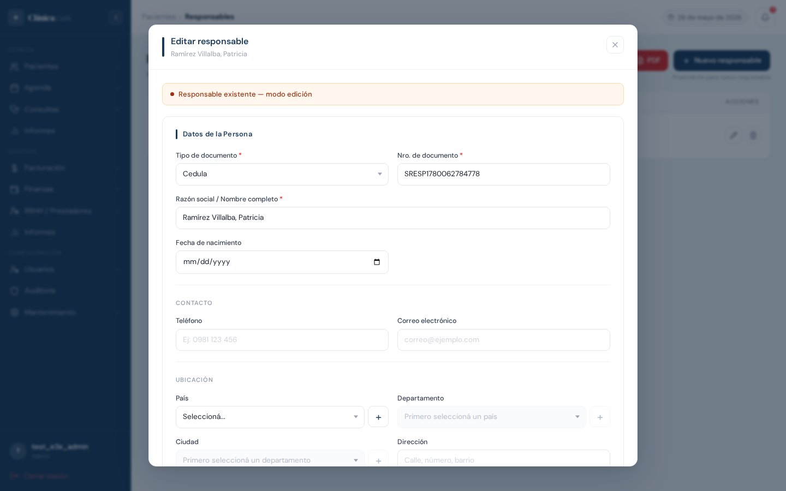
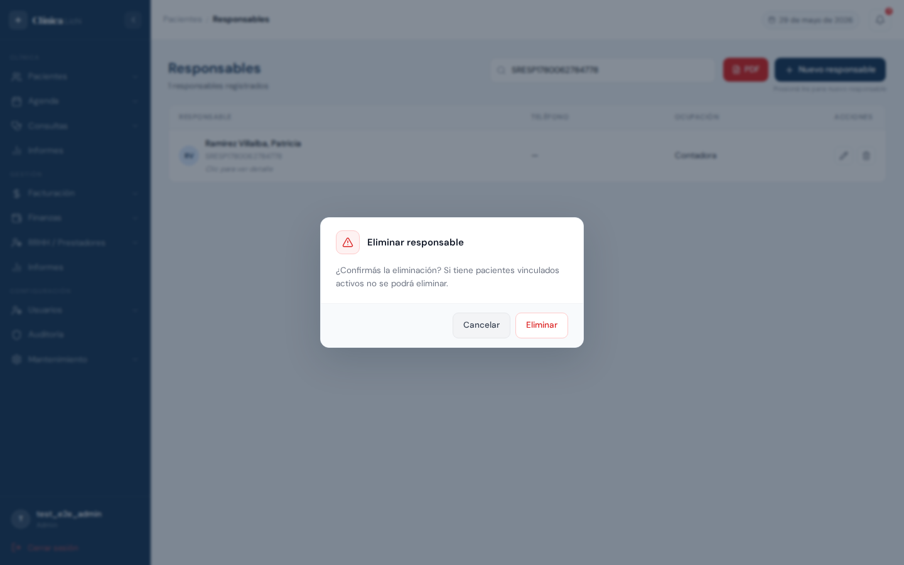
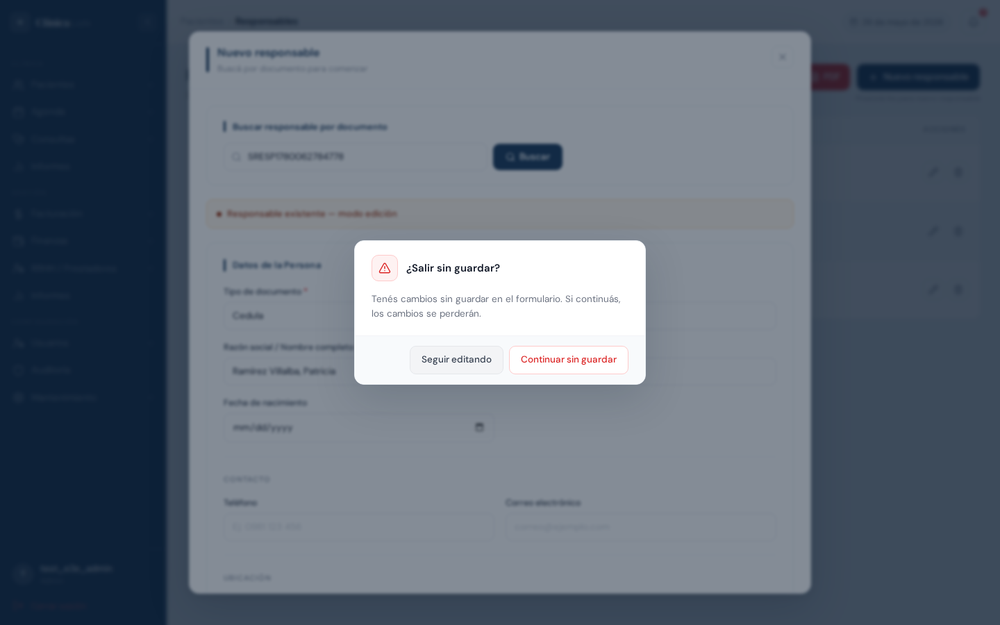

Descripción del módulo
El módulo Paciente Responsable permite registrar y administrar las personas que actúan como responsables, tutores o contactos de emergencia de los pacientes de la clínica. Un responsable se asocia a una Persona ya registrada en el sistema y puede vincularse a uno o más pacientes.
Datos que se registran para cada responsable: ocupación, grupo sanguíneo, si es contacto de emergencia y observaciones adicionales. Los datos personales (nombre, documento, teléfono, dirección) se gestionan desde el perfil de Persona y se muestran aquí de forma consolidada.
| Acción | Administrador | Recepcionista |
|---|---|---|
| Ver listado y detalle | ✅ | ✅ |
| Registrar responsable | ✅ | ✅ |
| Editar responsable | ✅ | ✅ |
| Eliminar responsable | ✅ | 🚫 |
Acceder al módulo
En el menú lateral izquierdo, hacé clic en Paciente Responsable (dentro de la sección de Pacientes o Mantenimiento, según la configuración del menú).
Pantalla principal — listado de responsables
Al ingresar se muestra una tabla con todos los responsables activos, ordenados alfabéticamente por número de documento. Cada fila muestra el nombre, el número de documento, el teléfono y la ocupación del responsable.

Columnas de la tabla
| Columna | Descripción |
|---|---|
| Responsable | Avatar con iniciales, nombre completo y número de documento. Debajo del nombre aparece el texto "Clic para ver detalle" en las filas no seleccionadas. |
| Teléfono | Teléfono de contacto registrado en el perfil de la persona. Muestra "—" si no tiene. |
| Ocupación | Ocupación o profesión del responsable. Muestra "—" si no se completó. |
| Acciones |
Editar — abre el modal en modo edición
Eliminar — abre el diálogo de confirmación (solo Administrador)
|
Buscar un responsable
El campo de búsqueda filtra la tabla en tiempo real por nombre completo o por número de documento del responsable.

| Comportamiento | Detalle |
|---|---|
| Por nombre | Filtra por el nombre completo del responsable (sin distinción de mayúsculas). |
| Por documento | Filtra por el número de documento de la persona. |
| Sin resultados | Muestra el mensaje "Sin responsables registrados". |
| Limpiar | Borrá el texto del campo para ver todos los responsables. |
Ver detalle de un responsable
Hacé clic en cualquier parte de una fila (excepto en los botones de acciones) para abrir el modal con la información completa del responsable en modo lectura.

El modal de detalle muestra:
- Avatar con iniciales y nombre completo
- Número de documento
- Datos de la Persona: teléfono, correo, dirección, país/departamento/ciudad
- Datos del Responsable: grupo sanguíneo, ocupación, si es contacto de emergencia, observaciones
Para cerrar el modal hacé clic en la X del encabezado.
Registrar un nuevo responsable
Hacé clic en el botón + Nuevo responsable en la esquina superior derecha (o presioná Insert cuando el modal esté cerrado). El registro de un responsable siempre se hace a través de una Persona: primero se busca la persona por documento y luego se completan los datos del responsable.

Flujo de registro
| Resultado de la búsqueda | Qué muestra el sistema |
|---|---|
| Persona encontrada, sin responsable previo | Se muestra el formulario con los datos de la persona pre-cargados y los campos del responsable listos para completar. Este es el caso habitual. |
| Persona encontrada, ya tiene responsable | Se abre en modo Editar — la persona ya tiene un responsable registrado y podés actualizar sus datos. |
| Persona no encontrada | Se muestra el formulario completo para crear la persona y el responsable en un solo paso. |

Editar un responsable
Podés editar un responsable desde el ícono de lápiz en la fila de la tabla o desde el botón Editar dentro del modal de detalle. A diferencia del registro, el modo edición muestra directamente el formulario con todos los datos pre-cargados, sin necesidad de buscar la persona.

Pasos para editar
- Pasá el cursor sobre la fila y hacé clic en ✏️, o abrí el detalle del responsable y hacé clic en Editar.
- El modal se abre en modo edición con todos los datos precargados: datos de la persona y datos del responsable.
- Modificá los campos que necesites. Podés actualizar tanto los datos del responsable (ocupación, grupo sanguíneo, etc.) como los datos personales (teléfono, dirección, etc.).
- Hacé clic en Guardar o presioná F10.
- El modal se cierra y los cambios se reflejan en la tabla. Se muestra una notificación verde.
Eliminar un responsable
Eliminar un responsable lo quita del listado activo, pero no borra sus datos personales del sistema ni los registros históricos. Es un borrado lógico.
Pasos para eliminar
- Pasá el cursor sobre la fila del responsable y hacé clic en el ícono de papelera 🗑️.
- El sistema muestra un diálogo de confirmación advirtiendo sobre pacientes vinculados.
- Hacé clic en Eliminar para confirmar, o en Cancelar para volver sin cambios.
- El responsable desaparece de la tabla. Se muestra una notificación verde.

Protección de cambios sin guardar
El sistema detecta automáticamente cuando empezaste a trabajar con un formulario (ya sea completando datos o simplemente buscando una persona) sin haber guardado. Si intentás cerrar el modal o navegar a otro módulo, aparece un diálogo de advertencia.

| Opción | Qué hace |
|---|---|
| Seguir editando | Cierra el diálogo y vuelve al formulario con los datos intactos para que puedas continuar o guardar. |
| Continuar sin guardar | Descarta los cambios y cierra el modal (o navega al destino solicitado). |
Situaciones en las que aparece el diálogo
- Hacés clic en Cancelar después de haber buscado una persona o modificado un campo
- Hacés clic en la X del modal con datos pendientes
- Hacés clic en otra fila de la tabla para cambiar el responsable seleccionado
- Navegás a otro módulo desde el menú lateral
Mensajes de error frecuentes
| Mensaje / Situación | Causa | Qué hacer |
|---|---|---|
| "Esta persona ya tiene un responsable activo registrado" | Intentaste crear un segundo responsable para una persona que ya tiene uno activo. | Buscá el responsable existente en la tabla y editalo si necesitás actualizar sus datos. |
| "No se puede eliminar: tiene X paciente(s) vinculado(s)" | El responsable está vinculado a uno o más pacientes activos. | Editá cada paciente activo vinculado desde la sección Pacientes y remové la referencia al responsable. Luego volvé a intentar la eliminación. |
| El modal no cierra tras hacer clic en Guardar | Hay un error de validación (ej: teléfono con formato inválido, correo electrónico inválido). | Revisá el mensaje de error que aparece en el formulario y corregí el campo indicado. |
| Botón Guardar no habilitado | Todavía no se realizó la búsqueda de persona (en modo crear) o el formulario está cargando. | Ingresá el número de documento y hacé clic en Buscar. El botón Guardar se habilita una vez que se carga el formulario. |
Comportamientos esperados que pueden confundirse con errores
| Situación | Explicación |
|---|---|
| Busco crear un nuevo responsable pero el sistema abre modo Editar | La persona que buscaste ya tiene un responsable activo. El sistema lo detecta automáticamente y te lleva a editarlo en lugar de crear un duplicado. |
| No aparece el ícono 🗑️ en las filas | Tu rol es Recepcionista. Solo los Administradores pueden eliminar responsables. |
| Al cerrar el modal aparece el diálogo de protección sin haber modificado nada | La protección se activa en cuanto el sistema retorna el resultado de búsqueda. Es el comportamiento esperado para prevenir pérdidas accidentales. |
| La tabla muestra "Sin responsables" aunque haya datos | Hay un filtro de búsqueda activo. Borrá el texto del campo para ver todos los responsables. |
| No veo el botón "Eliminar" en el modal de detalle | La eliminación no está disponible desde el modal de detalle en este módulo. Usá el ícono de papelera en la fila de la tabla (solo Administrador). |